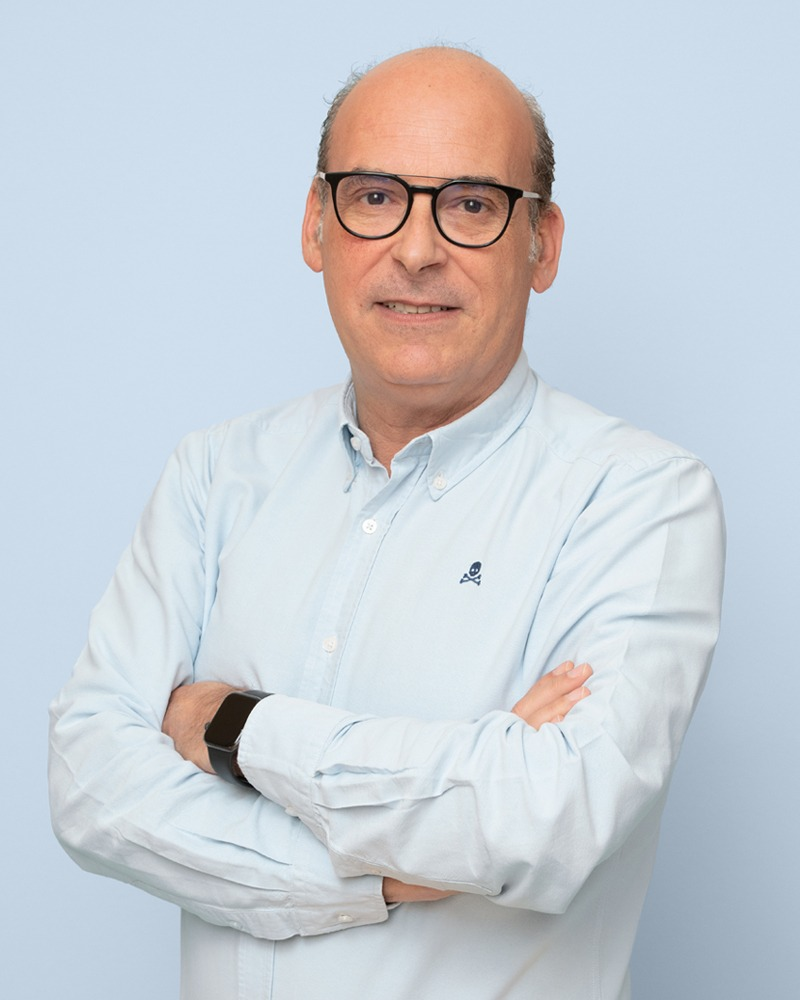
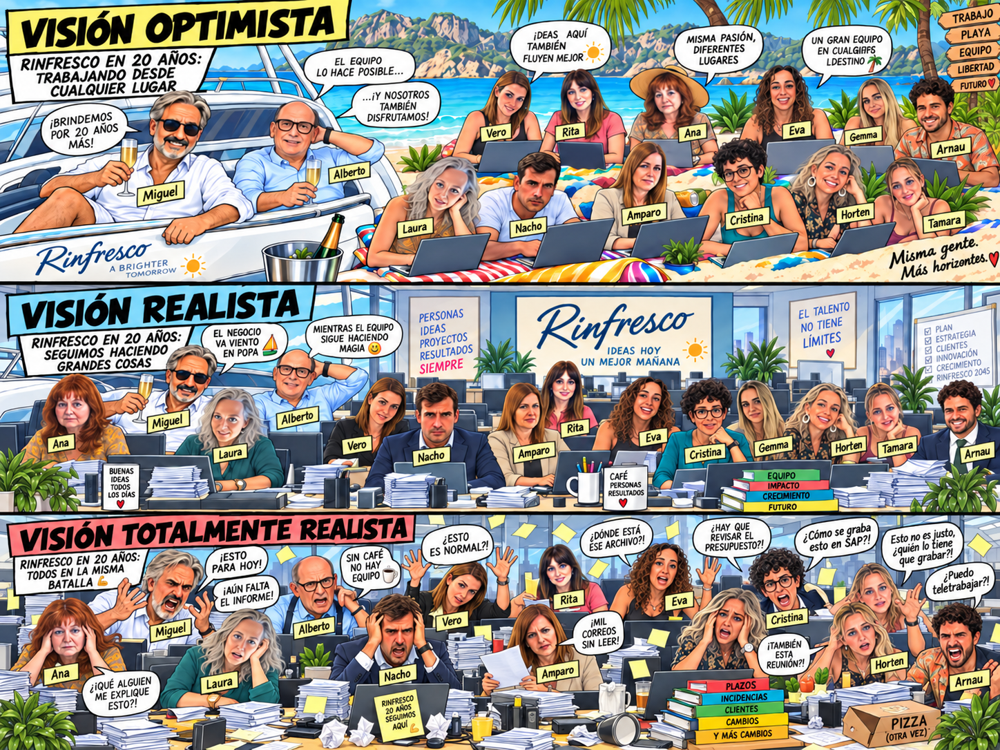

2006 — 2026
20 AÑOS
DE RINFRESCO
Nuestra historia.
Un nombre nacido de un error. 40.000 euros. Oficinas, decisiones, anécdotas y, sobre todo, personas.
Nuestra historia.
Un nombre nacido de un error. 40.000 euros. Oficinas, decisiones, anécdotas y, sobre todo, personas.
Dos personas, una empresa por construir y ninguna idea de todo lo que vendría después.

TODO EMPEZÓ CON DOS.20 AÑOS DESPUÉS, SOMOS 14.
Y en un equipo así cada uno cuenta de verdad.
Aquí no sobra nadie y se nota cuando alguien falta.
La historia completa, contada con humor, nostalgia y emoción.
Buenos días. Hoy nos hemos juntado, no para hablar de SAP, ruta, pedidos…, sino para celebrar por todo lo alto el 20.º aniversario de la empresa que, como nos imaginamos que sabéis, nació el 29 de septiembre de 2006 (por cierto, día de San Miguel).
Hemos venido a celebrar, con una mezcla de humor, nostalgia y emoción, algo que ni Alberto ni yo podríamos haber imaginado hace 20 años que conseguiríamos. Nosotros solo queríamos jubilarnos a los 40; como veis, se nos ha pasado el arroz. Aun así, el tiempo te enseña que hay cosas más importantes que el dinero y una de ellas es sentirse responsable de la gente que dejas entrar en tu empresa, aunque a veces los tirarías a todos por la ventana de alguna de las tantas oficinas que hemos tenido… Y tendremos.
Empezamos hace 20 años con una visita a la notaría de un gran amigo de la familia; ahí nos presentamos Alberto, Ana y yo…, sin un euro, pero con 40.000 euros de póliza TOTALMENTE AVALADA, que en aquel momento parecía muchísimo dinero y ahora sabemos que era más bien un acto de fe… o directamente inconsciencia bien gestionada.
Empezamos también con un nombre, Rinfresco, convencidos de que significaba «refresco» en italiano… y luego resultó que no. No volváis a fiaros de un amigo que dice que sabe un idioma porque haya estado un año de Erasmus. Pero oye, el nombre se quedó y aquí seguimos 20 años después.
En estos años ha pasado de todo; y cuando digo que ha pasado de todo no me refiero solo a anécdotas, no; me refiero a que ha pasado cada personaje (¡os incluyo a todos!).
Por orden:
Alguna que, al poco tiempo de entrar, pensaba que iba a dedicar más tiempo a arreglar bolis rotos y apagar fuegos que a hacer de administrativa propiamente dicha, sin olvidarnos de sus meses como cajera en Cash Valencia. Unos meses más y la nombran ministra de Igualdad de Podemos.
Entrevistas en cafeterías, que alguna pensó que venía a una cita de Tinder y no a una entrevista de trabajo. Y, por cierto, fue a la entrevista… A ver si se llevó un chasco cuando se le ofreció el puesto y no una cerveza o una cena.
¿Qué decir de nuestro portal de empleo? Hay gente que busca en multinacionales con nombres ingleses que suenan superprofesionales y muy «cool»… ¡INFELICES! ¡Donde esté Media Markt! Eso sí es un gran portal de empleo. ¡Fuimos listos y compramos una promoción de 3! Ya podría haber sido en los días sin IVA… pero no, ¡mucho le gusta a FRÁUDEZ sablearnos a todos!
Y, de repente, Andalucía; se presenta uno en la entrevista como si viniese de hacer espetos en Málaga; y lo mejor es que sigue así, pegando gritos como si tuviese que escucharle el guiri de la playa. No sé por qué, pero cuando veo «La que se avecina» y veo al espetero de playa me dan unas ganas de vender Heineken en China.
Y llegó el momento de la internacionalización; para ser sinceros, creíamos que era española, pero que tenía problemas con las expresiones; no entendíamos la mitad de las cosas que decía, nos mirábamos, hacíamos cábalas, pero ¿cómo íbamos a pensar que una argentina solicitase un empleo que no fuera de psicóloga? Cuando oímos «boludo» caímos en que estábamos internacionalizando la empresa. Igual, si la hubiésemos entendido en el primer momento, su incorporación hubiese sido antes; pero bueno, como se ha demostrado a veces (El Padrino II), en ocasiones las segundas partes son mejores que la primera. En nuestro caso, tenemos dos segundas partes que son infinitamente mejores que la primera.
¿Y cuándo recibimos el CV de la hija de Juan Roig? Fue al poco tiempo de la visita que nos hizo y pensamos: «¡Joder! ¡Pues sí que le ha gustado Rinfresco y nos manda a su hija para terminar comprando la empresa!». Pero no, no era esa Hortensia. Nosotros, que le habíamos organizado una formación por todos los departamentos: administración, droguería, bebidas… Pues eso hicimos: ale, a pasar por todos los sitios.
¿Y la mayor consumidora de té de Europa y, probablemente, de toda Asia? Se ha visto al responsable de compras de té de Mercadona comprando un barco de 20 metros desde que Ana se incorporó a Rinfresco. El día que grabe los pedidos en SAP como prepara los tés, ¡la hacemos gerente sin presentarse ni nada!
Amparo, llevas menos de un año y tengo que decirte que no sabes CÓMO AGRADEZCO TU DISCRECIÓN Y TU SILENCIO. Dios, ¡lo que pagaría por sentarme en tu mesa!
En los últimos meses (y semanas) se han incorporado dos más: Cristina y Arnau. Solo os diré dos cosas: una, en Navidad os toca hablar (a ti también, Amparo). Podríais ensayar un trío, pero no de los que está imaginando ahora Nacho, no, de esos no. Y dos, ¡los nuevos pagan las copas!
Por supuesto, no nos queremos olvidar de todos los que han pasado por Rinfresco; algunos no están porque se han buscado su camino y estamos seguros de que Rinfresco les ha ayudado; otros no están porque no han podido encajar con nosotros. Es ley de vida y es el mundo laboral, y siempre será así. Gracias a todos, incluso a los que duraron 8 horas o, mejor aún, a los que ni llegaron a subir por el ascensor.
Y con estos mimbres aquí seguimos, más fuertes que nunca y con una perspectiva, sin ninguna duda, mucho mejor que la de hace 20 años. Nos quedamos cortos: infinitamente mejor. Y sería una pena no aprovechar la situación de la que partimos ahora. Porque, si algo hemos aprendido en estos 20 años, es que hemos llegado hasta aquí por apostar por este equipo y por tener constancia, incluso en los momentos en los que no tenemos ganas de nada.
Hoy somos 14 personas y, en un equipo así, cada uno cuenta de verdad. Aquí no sobra nadie y se nota cuando alguien falta.
No sabemos cómo serán los próximos 20 años, pero sí sabemos cómo queremos trabajarlos: con sentido común, con profesionalidad, con lealtad a la empresa, con cercanía y sin perder lo que nos ha traído hasta aquí.
Gracias por el trabajo, por la implicación y por estar ahí incluso cuando las cosas se complican.
Vamos a brindar por esos 40.000 euros iniciales, por el nombre mal traducido, por las entrevistas raras, por los bolis arreglados, por las traducciones simultáneas improvisadas, por los espetos, por Media Markt, por la hija de Juan Roig, por el té (que se convierte en tequilas en Vessel), por el silencio y por los futuros tríos.
Gracias y feliz 20.º aniversario.
Después de recordar todo lo vivido, también nos hemos permitido imaginar el futuro. Hay una versión optimista, una realista y otra... totalmente realista.

Una visión rigurosamente poco científica del futuro de Rinfresco.
Veinte años no son un final. Son el lugar desde el que seguimos.